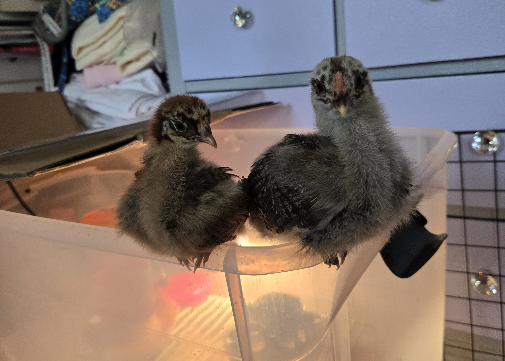

About me
Hello, My name is Elena. This is my first website so I am just getting started! :)
I have 6 pets
I am a UNT graduate. I graduated with a Bachelors in applied Arts and Sciences with focuses in Computer Science, Mathematics, and Psychology. I also have my Associates in Computer Science.
I went to school at Brookhaven Community College then transferred to University of North Texas. It took me about 6 years to get my Bachelors degree.
I learned to sew when I was about 9 from my grandma and my mom. I would fix holes in my clothes or small tears everyso often. My grandpa found this sewing machine one day and saw that it still works. He thought that I would want it. After I got it I have cleaned it up, oiled it, and used it everyonce in a while. Now I am practcing making clothes, pillows, and plush animals. I want to create my own patterns and my own custom made items to sell eventually.
Featured Photos

